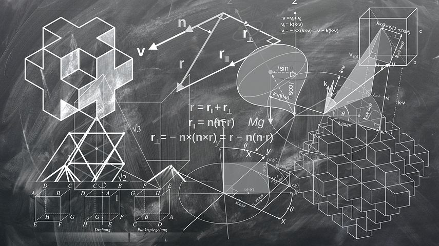

Parmi les nombreuses méthodes susceptibles d’améliorer la motivation des apprenants, on trouve la pédagogie par projet. Il s’agit d’une pratique de pédagogie active qui permet de générer des apprentissages à travers la réalisation d'une production concrète et la résolution de problèmes. Elle permet également de mobiliser les compétences transversales des apprenants, de recourir aux TICE et de familiariser les apprenants à la complexité du monde professionnel actuel. Elle vise aussi à inciter les formateurs à travailler en équipe, ou encore à développer une approche par compétences.
La notion de projet
Un projet suppose un certain engagement du sujet vis-à-vis d’un objectif, la planification nécessaire des actions pour arriver à cet objectif, et l’aspect matériel de la réalisation du projet. La pédagogie par projet permet donc à l’apprenant de se familiariser avec les outils de gestion de projet et d'être confronté à la résolution d’un problème nécessitant de mobiliser des connaissance et compétences transversales, voir d’en acquérir de nouvelles.
Enseigner en mode projet : un exemple de mise en place d’une pédagogie par projet en deuxième année d’IUT.
Dans le cadre d’un module de méthodologie de projet qui se prête, il faut bien l’avouer, particulièrement bien à la mise en place d’une pédagogie par projet, une équipe de trois enseignants a pu encadrer une soixantaine d’étudiants. Cela s’est fait autour d’une dizaine de projet émanant de différentes organisations commanditaires sur une durée de 6 mois, faisant intervenir l’ensemble de l’équipe pédagogique du DUT dans un but de transversalité et de complémentarité. L’objectif pour les étudiants était de mieux assimiler les méthodes de gestion de projet en les appliquant à un projet réel mais aussi d’utiliser les différents contenus vus dans le reste de la formation.
Ce module peut se faire en mode séminaire sur une semaine pour mieux s’immerger dans le projet ou s’étaler sur quelques semaines pour une meilleure prise de recul… les deux ont été testé de manière concluante ; la première est plus fatigante !
Vous constaterez que chaque demi-journée commençait par un dynamiseur ou ice breaker issu des agiles games et que chaque journée se terminait par une présentation d’un résumé du travail effectué en mode « pitch 2 minutes pour convaincre ».
La totalité des documents étaient hébergés sur la plate-forme Moodle
Programme:
Jour 1 : cadrage
- Matin
- Ice breaker dynamiseur « Yaha !! »
- Présentation méthodes de gestion de projet : classique/lean et des outils de cadrage associés
- Constitution des groupes ; présentation succincte et attribution des sujets.
- Travail sur les acteurs et enjeux liés au sujet ; les missions et objectifs.
- Jeux de communication : Mémory Agile ; ball point game et chaises non musicales
- Après-midi :
- Introduction au pitch en vue d’une présentation en clôture de journée des pitchs de cadrage du projet (2’ pour convaincre, avec ou sans support).
- Présentation de l’outil de suivi TRELLO
- Processus et phases de la proposition pour ébauche à proposer aux commanditaires
1/2 Jour 2 : techniques de négociation
- Ice breaker « Triangle et évolutions »
- Introduction aux techniques de négociation
- Calendrier et règles du Projet tuteuré côté IUT, règles de communication avec le commanditaire, grilles d’évaluation.
- Rencontres avec les commanditaires et les enseignants référents.
Jour 3 : créativité
- Matin : méthodes de créativité pour trouver nom projet/groupe + slogan
- Ice breaker (helium stick)
- Méthodes KISS et GBS ; Combinatoire (brainstorming, assemblage)
- Méthode des 6 chapeaux pour choix d’un nom pour le projet
- Méthode des 7x5 pour choisir le slogan/jingle
- Présentation des films des meilleurs jingles en mode pitch.
- Après-midi :
- Dynamiseur “Viking”
- Travail sur la gestion de conflit dans le groupe : théâtre forum + scène de théâtre à présenter ensuite en mode pitch en fin de journée.
1/2 Jour 4: réseaux

- Ice breaker Human Web
- Présentation de la théorie des réseaux
- Travail à partir des sociogrammes du groupe qu’ils ont construit entre deux séances.
- Extension de ces sociogrammes en créant des relations intergroupes grâce à un « World café ». Objectif : création de synergies.
- Accompagnement à la définition du sociogramme intégrant risque confiance
- Rendu : sociogramme groupe enrichi (nom des personnes lien) .
Jour 5 : business plan, business model et prévisionnel
- Matin :
- Dynamiseur « 1, 2, 3 GO »
- Présentation Business plan + plan type
- Business modèle à partir du tableau CANVAS
- Après-midi :
- Plan financier prévisionnel : Compte de résultat prévisionnel, bilan prévisionnel et plans de trésorerie sur les 12 premiers mois.
- Présentation en 5 minutes du BM/PF.
1/2 Jour 6: facilitation graphique et méthode Agile
- Dynamiseur « Pierre Feuille Ciseaux »
- Théorie et outils de suivi de projet.
- Outils de facilitation graphique
- Retour /remédiations note de cadrage.
- Agile game initiation méthode agile : Artistes et spécifieurs
- Point d’avancement sous forme de mind map à présenter en fin de journée!
1/2 Jour 7: l'après-projet
- Ice breaker “Animal Group”
- De l’importance de l’après-projet.
- Point avancement avec les commanditaires et l’équipe enseignante à partir de 4 thématiques dans 4 salles selon besoin des groupes.
Pour plus d’information sur la pédagogie par projet (également testée sur des modules de monographie et de méthodologie d’enquête en première année), ou pour plus de détails sur les éléments présentés dans ce document n’hésitez pas à nous contactez .